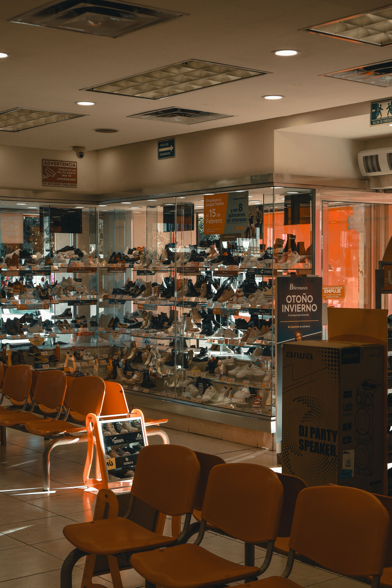

Feminino
Calçados e opções para compor diferentes estilos.
Ver categoriaConheça a Kallan e explore opções de calçados e acessórios para diferentes estilos e momentos.

Calçados e opções para compor diferentes estilos.
Ver categoriaModelos para diferentes ocasiões e preferências.
Ver categoriaOpções pensadas para o público infantil.
Ver categoriaOpções para atividades e rotina esportiva.
Ver categoriaComplementos para diferentes produções.
Ver categoriaA Kallan trabalha com marcas reconhecidas do mercado. Consulte a seleção disponível.
Conhecer marcasA empresa apresenta um conceito de autosserviço, oferecendo autonomia ao cliente e apoio da equipe quando necessário.
Conheça as funcionalidades e os benefícios divulgados para o cartão da Kallan.
Consulte as unidades da Kallan e escolha a loja mais conveniente para você.
Esta área será usada para o áudio e o vídeo autorizados pela organização.